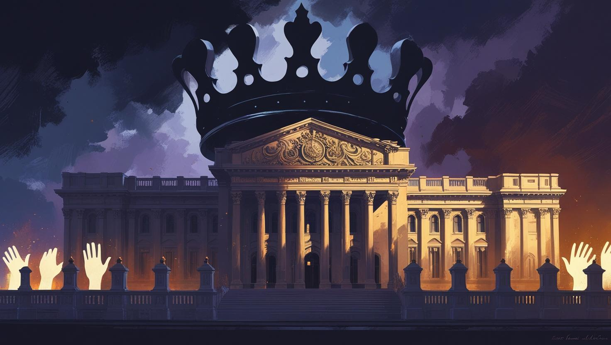
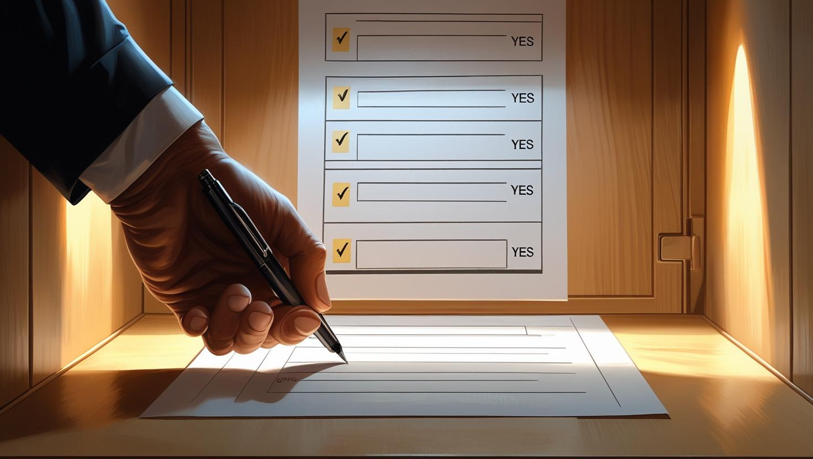
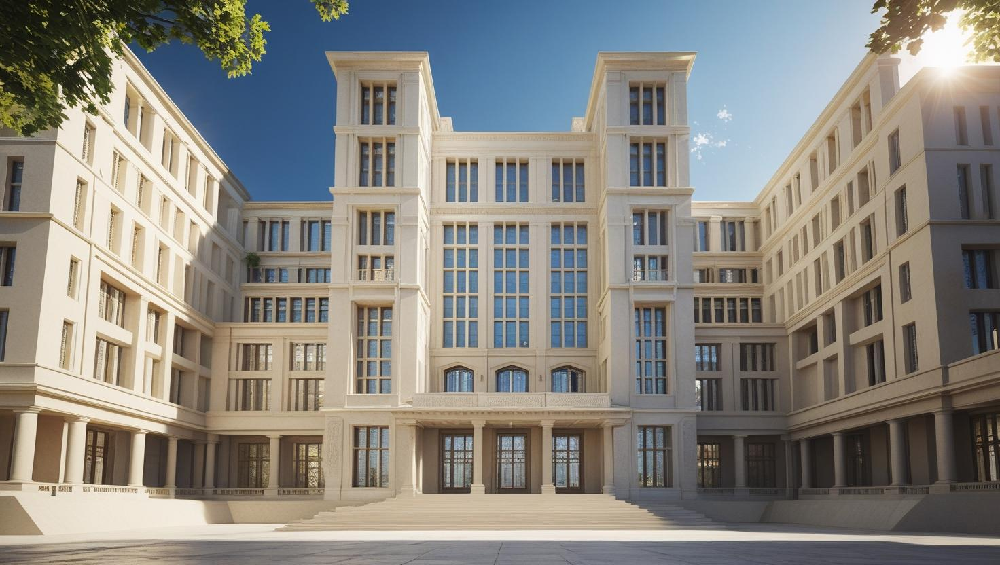
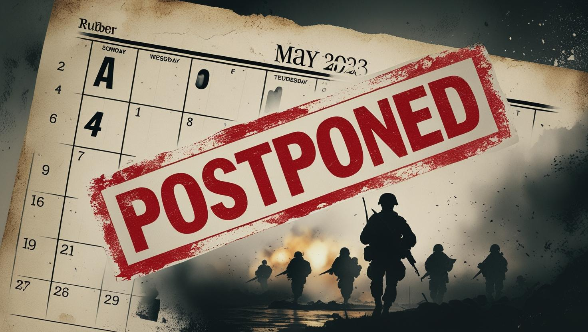
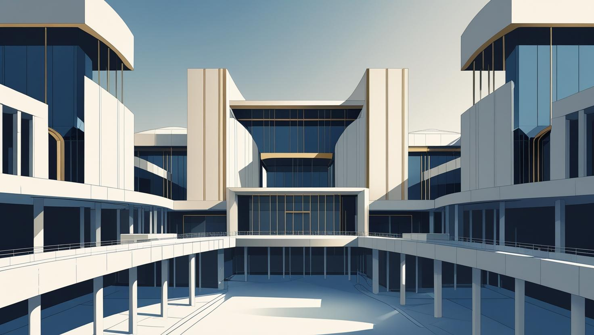

From Monarchy to Representative Government
In the formative, often paradoxical, early years of the Lardish Republic, the nation
continued its operation
largely under the pervasive influence of a monarchical system. Though officially designated a republic in
2020, a significant contradiction existed: no democratic elections were actually held
during this initial
period. The Parliament, structured with both a lower and a higher chamber, regrettably functioned far more
as a pliable instrument of royal control than as a genuine forum for civic representation. Its members were
meticulously appointed by the President, but only after a careful selection process conducted by the King
himself and his inner circle of trusted advisors. In this system, unwavering loyalty to the Crown remained
the solitary, overriding qualification for holding any legislative office, underscoring the centralized
nature of power.
A Nation Awakens: The First Steps Toward Democracy
A palpable shift in the national mood began to emerge. In March 2022, spurred by escalating popular unrest and persistent pressure from determined reformist factions, the Lardish National Electoral Institute (LNEI) was formally founded under the guidance of the Central Lardish Committee. This marked a pivotal moment. The LNEI's inaugural public consultation, held in April, became the country’s very first formal act of widespread citizen participation, a symbolic initial step away from autocracy. This nascent democratic process culminated in a crucial major referendum held in October 2022, wherein citizens were presented with several critical questions that directly challenged the existing order:
- "Should the country remain a constitutional monarchy?"
- "Should general elections be held every four years?"
- "Should electoral reforms begin immediately?"
The public's response was definitive and overwhelming: they voted decisively for change. This powerful collective endorsement undeniably paved the way for what would soon be recognized as the transformative Republican Transition.
Founding the Republic and a New Legislature
Bolstered by a confluence of both popular and burgeoning institutional support, Lard Lapudding proclaimed the official establishment of the Republic in December 2022. His declaration was accompanied by a solemn and highly anticipated promise: to hold free and fair elections in the upcoming May 2023. These elections were slated to determine the nation's new leadership, including:
- The President
- The Vice President
- Members of the Regional House of Lardish Representatives (REHAR)
- The House of Lardish Deputies
- The Lardish Senate
This newly conceived tricameral system was meticulously designed to ensure a robust and comprehensive balance among regional, national, and federal interests, aiming for a more equitable and representative form of governance. Specifically:
- REHAR was designated to represent the distinct states and their local regions.
- The House of Deputies was established to give voice to the general populace across the nation.
- The Senate was intended to function as the upper, federal chamber, providing a broader, more national perspective.
War and Postponement: Democracy Delayed
However, the path to a fully realized democracy proved unexpectedly arduous. Before these pivotal elections
could even take place, the nascent nation was tragically plunged into the devastating Three Lardish
War, a
conflict that forced an unavoidable postponement of the highly anticipated vote. A fragile semblance of
stability only gradually returned by November 2023, at which point the very first national
elections in the
United States of the First Lardish Republic (USFLR) could finally be held, albeit under the
shadow of recent
conflict.
To secure a victory in these critical elections, candidates were constitutionally mandated to garner at
least 55% of the vote. Lard Lapudding successfully won the presidency with an impressive
75% of the vote,
cementing his leadership. However, his chosen Prime Minister candidate fell short of the required
threshold, necessitating a runoff election. This subsequent contest ultimately resulted in Juanita
Banana's
victory with 59% of the vote. Both leaders were inaugurated immediately following their
respective wins,
while the newly constituted Congress officially took office in January 2024, marking the
full transition to
the elected government.
An Idea Never Realized
In the final, tumultuous months leading up to the country’s eventual dissolution, President Lapudding's administration harbored one last significant electoral ambition: they proposed implementing an electoral college system, explicitly drawing inspiration from the model utilized by the United States. This proposed reform aimed to further refine the nation's democratic mechanisms. However, the plan encountered widespread and staunch opposition from various factions across the Republic. Consequently, this ambitious idea, despite its potential to reshape the political landscape, was never fully enacted, remaining a mere theoretical footnote in the nation's brief democratic experiment.